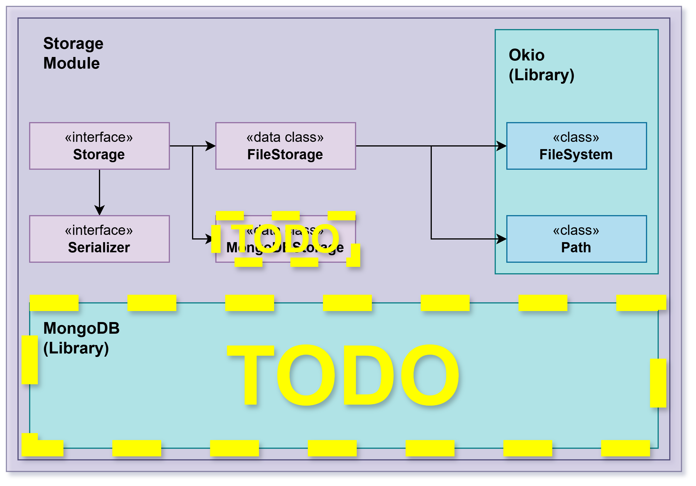

reversi-storage
Overview
Provides persistent storage for game snapshots using the local filesystem. This module implements a simple, text-based storage system that favors human-readable saves for easy debugging and manual inspection. Games are stored as plain text files in a configurable saves folder, allowing users to view and manually edit saved games if needed.
The module follows a clean separation of concerns: storage logic is decoupled from the serialization format. Different serializers can be plugged in to convert domain types to/from various formats (currently text-based).

Architecture
The module consists of:
Storage Contracts — Generic Storage and AsyncStorage interfaces
File-Based Implementations — FileStorage and AsyncFileStorage
Serializer Contract — Generic Serializer interface
Optional Database Support — MongoDB implementations (AsyncMongoDBStorage)
Storage Contracts
Storage
Synchronous storage contract:
K— Key type (typically String for game names)T— Domain type being stored (e.g., GameState)U— Storage format (typically String)
Methods:
new(id, factory)— Creates a new entity and stores itload(id)— Retrieves an entity by keysave(id, obj)— Persists an entitydelete(id)— Removes an entitylastModified(id)— Gets modification timestamploadAllIds()— Lists all stored keysclose()— Releases resources
AsyncStorage
Same contract as Storage but with suspend functions for non-blocking I/O:
All methods are
suspend funSuitable for coroutine-based applications
Used by reversi-cli for responsive user experience
Serializer Contract
Serializer
Converts between domain types and storage format:
serialize(obj: T): U— Domain object to storage formatdeserialize(obj: U): T— Storage format to domain object
Must preserve round-trip identity: deserialize(serialize(x)) == x
File-Based Storage
FileStorage
Implements synchronous Storage contract using text files:
Stores each entity in a separate
.txtfileFiles named after the entity key (game name)
Uses provided Serializer to convert GameState to/from text
Creates saves folder and files as needed
Example: Game "mygame" is stored in saves/mygame.txt
AsyncFileStorage
Non-blocking version of FileStorage:
Uses Kotlin coroutines for I/O
Suitable for interactive applications (CLI)
Prevents UI freezing during save/load operations
File Format
Each saved game file contains:
Players Line — Serialized player data (symbol,points;...)
Last Player Line — Who played last (# or @)
Winner Line — Winner data if game ended (empty if ongoing)
Board Lines — Board size, then pieces (row,col,symbol)
Example:
#,12;@,5;
#
8
4,4,@
4,5,#
5,4,#
5,5,@This format is:
Human-readable — Can be manually inspected
Line-oriented — Easy to parse and debug
Sparse — Only stores pieces, not empty squares
Versionable — Can be enhanced with format markers
Database Support
AsyncMongoDBStorage
Optional MongoDB backend for storing games:
Stores game documents in MongoDB
Implements AsyncStorage interface
Provides scalability for server deployments
Used by desktop app or server versions
Serialization Layers
The storage module uses serializers from the core module:
Core Serializers (in reversi-core)
GameStateSerializer— Entire game stateBoardSerializer— Board and piecesPlayerSerializer— Player dataPieceSerializer— Individual piecesPieceTypeSerializer— Piece symbols
Storage Module Role
Storage module knows nothing about GameState; it only:
Calls the provided Serializer
Writes/reads bytes from files
Manages directory structure and file lifecycle
This separation means:
Serialization logic lives with domain types (core module)
Storage logic is reusable with any Serializable type
Different storage backends can be used without changing serializers
Configuration
Storage uses configuration from core module via CoreConfig:
savesPath— Directory for saved games (default: "saves")Can be changed at runtime to test different storage locations
Error Handling
Storage exceptions (typically from FileSystem):
File not found when loading non-existent game
I/O errors when reading/writing files
Permission errors when accessing file system
Serialization errors from malformed files
These propagate to the caller as Exception or IOException.
Design Principles
Simplicity — Plain text files, easy to inspect
Human-Readable — Users can view and edit saves
Separation of Concerns — Storage doesn't know about domain types
Pluggable Serializers — Can support multiple formats
Async Support — Non-blocking I/O for interactive apps
Optional Backends — MongoDB support for scalability
Usage Patterns
Loading a Game
val storage = AsyncFileStorage(GameStateSerializer(), "saves")
val gameState = storage.load("mygame")Saving a Game
storage.save("mygame", gameState)Listing All Games
val allGameNames = storage.loadAllIds()Cleaning Up
storage.close()Integration
The storage module integrates with:
reversi-core — Domain types and serializers
reversi-cli — Uses AsyncFileStorage for game persistence
File System — Reads/writes
.txtfiles in saves folderOptional: MongoDB — Alternative backend for AsyncMongoDBStorage
Packages
Implements persistence using plain text files placed in a saves folder by default, with optional MongoDB support for scalable storage. The storage code is intentionally simple: domain objects are converted to a textual representation via Serializer implementations and written to files. This approach favors human-readable saves that are easy to debug and test.